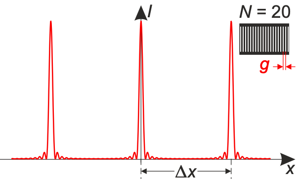

Viele parallele Spalte, mit gleicher Spaltbreite und gleichem Abstand zueinander, werden optisches Gitter genannt. Im Beugungsbild eines Gitters erscheinen äquidistante Hauptmaxima, die schmaler und heller sind als beim Doppelspalt. Zwischen den Hauptmaxima liegen breite Bereiche, in denen das Licht durch Interferenz nahezu ausgelöscht wird, vgl. Abbildung 1. Die theoretische Betrachtung des Gitters unterscheidet sich nicht vom Doppelspalt. Die folgenden Ausführungen erfolgen am Doppelspalt.

Abbildung 1: Fraunhofer-Beugungsfigur [1, S. 318]
Für \(\alpha=0\) ist der Gangunterschied der beiden Wellenzüge \(\Delta s=0\), sodass sich in der Mitte des Schirms ein Interferenzmaximum, das sogenannte Maximum nullter Ordnung, ergibt. Auch für andere Winkel \(\alpha\) sind beide Wellenzüge in Phase, nämlich dann, wenn der Gangunterschied \(\Delta s=\lambda\) oder ein Vielfaches der Wellenlänge beträgt [1, S. 318]. Allgemein folgt für konstruktive Interferenz die Bedingung
\(\Delta s=\lambda \cdot n\) (1)
mit \(n \in \mathbb{N}\). In Abbildung 2 ist der Weg zweier Wellen vom Doppelspalt bis zum Punkt P des Schirms schematisch dargestellt. Der Schirm befindet sich im Abstand e zum Doppelspalt und der Punkt P im Abstand s \(_n\) zum Interferenzmaximum nullter Ordnung. Der Abstand der Spaltmitten, kurz Spaltabstand d, entspricht der gesuchten Spurbreite.
Abbildung 2: Beugung am Doppelspalt
Für die beiden rechtwinkligen Dreiecke ergeben sich die folgenden Winkelfunktionen.
\(\sin(\alpha)=\frac{\Delta s}{d}\) (2)
\(\sin(\alpha)=\frac{s_n}{h}\) (3)
Für die Hypotenuse h gilt nach dem Satz des Pythagoras:
\(h = \sqrt{e^2+s_n^2}\) (4)
Gleichsetzen von (2) und (3) und Einsetzen von (4) ergibt:
\(\frac{\Delta s}{d}=\frac{s_n}{\sqrt{e^2+s_n^2}}\) (5)
Im letzten Schritt wird die Gleichung (5) nach dem Spurabstand d umgestellt und die Gleichung (1) eingesetzt, sodass folgt:
\(d=\frac{\lambda \cdot n \cdot \sqrt{e^2+s_{n,max}^2}}{s_{n,max}}\)
d ...Spaltabstand
e
...Abstand vom Doppelspalt zum Schirm
n
...Ordnung
\(s_n\) ...Abstand
Maximum n-ter Ordnung zum Maximum nullter Ordnung